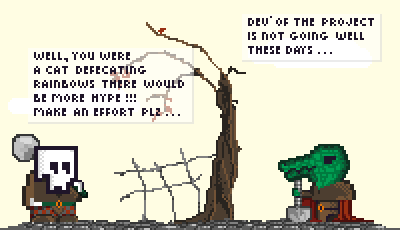
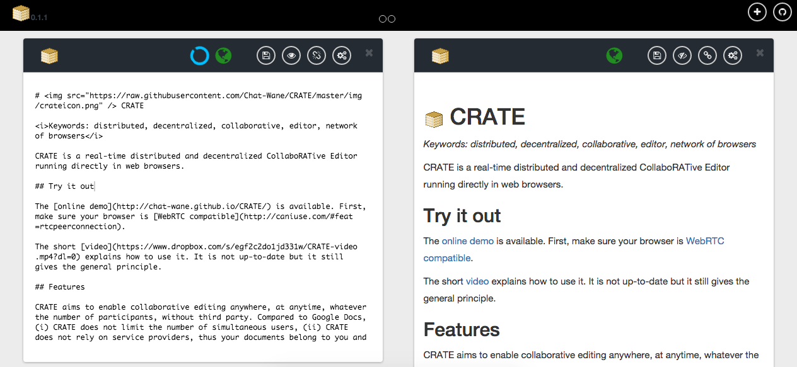
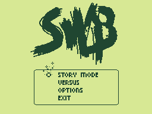

Brice Nédelec
- Ph.D. / Software architectAbout
I currently hold a post-doctoral position at the University of Nantes, France, as a member of the GDD team. I work on a project that aims to build fully working distributed systems inside web browsers. In particular, I work on causal broadcast: a communication primitive of many distributed applications.
I got a Ph.D. in computer science from the University of Nantes, France, in 2016. The topic of this Ph.D. thesis was about decentralized collaborative editing in web browsers. This thesis was supervised by Prof. Pascal Molli, and Prof. Achour Mostéfaoui. Beforehand, I obtained a M.Sc. degree in software architecture from the University of Nantes in 2012.
My research interest includes, but are not limited to, decentralized protocols, causality tracking, and distributed collaborative editing. Overall, I am just interested in solving puzzles.
Publications
October 2018
International Symposium on Reliable Distributed Systems
2017
Concurrency and Computation: Practice and Experience
2017
World Wide Web Journal
October 2016
Ph.D. manuscript
Collaborative editors allow users to distribute the writing of a document across space and time. Thanks to their ease of use, real-time collaborative editors working in Web browsers vastly contributed to the adoption of such tools. However, current editors are centralized: a service provider's server hosts an editing session. It raises privacy and scalability issues.
Recently, the enabling of browser-to-browser connection establishments opened new opportunities in favor of a decentralized Web. Decentralized real-time collaborative editors working in Web browsers must efficiently handle highly dynamic groups of different size.
Contritributions of this thesis are threefold: (i) To represent the document, we propose a replicated data structure for sequences using metadata the size of which scales sub-linearly compared to the number of inserted characters. (ii) To efficiently propagate the changes to all editors involved in the collaborative writing, we propose a random peer sampling protocol that supports Web browsers constraints and self-adjusts its functioning to the variations of network membership. (iii) To demonstrate the feasibility of a decentralized real-time collaborative editors running in Web browsers, we propose an editor using (i) and (ii), and we highlight its scalability.
April 2016
Proceedings of the 25th International Conference Companion on World Wide Web, WWW'16 Companion
September 2013
13th ACM Symposium on Document Engineering
September 2013
DChanges, volume 1008 of CEUR Workshop Proceedings
Projects
I had a lot of projects, but most of them are unfinished business...The Gravedigger [code]

Gravedigger is a plateformer game where the main character, a gravedigger, tries to keep his job. Indeed, the scientists recently discovered a way to brutally improve the life expectancy of the human kind. As a consequence, the corpses become rare. Gravediggers lose in utility. Tackling this problem, Gravedigger starts a mighty quest to discover a holy virus. He hopes that, with the epidemic, the flow of corpses will be back...
Not even close to be finished, but the idea is still appealing, and a lot of ideas are still written and stored for later use. Hopefully!
A CollaboRATive Editor: CRATE [code]

CRATE aims to enable collaborative editing anywhere, at anytime, whatever the number of participants, without third party. Compared to Google Docs, (i) CRATE does not limit the number of simultaneous users, (ii) CRATE does not rely on service providers, thus your documents belong to you and whom you trust, (iii) CRATE does not include all text editing capabilities.
This is a years long project that summarizes my Ph.D. thesis. It comprises network management, causality tracking, consistency criteria, and even graphical user interface (not my forte). The project is still buggy. A lot of improvements have to be done, for the sake of resilience. But I am done with it! It worked as intended: a proof of concept.
Super Wind Breaker [code]

Super Wind Breaker is a party game designed for 2-4 players where two sides fight against each other. The rectangular playground is vertically divided and fully closed. Each opponent tries to fire a ball at the other end of the playground. A destroyable wall of bricks protects each end. The cast is composed of 8 characters (hopefully). Each of these characters has specific properties (e.g. the layer of the wall of bricks, the movement speed, the special abilities).
This project is less ambitious than others and could be released in a first pre-alpha version in a few months.
Contact
- brice.nedelec at ls2n.fr
- brice.nedelec at gmail.com
- chat-wane